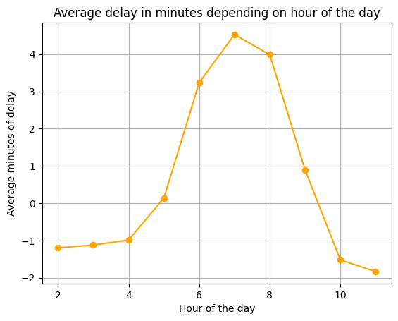

MBTA Data Visualizations

Graph 1
This graph depicts an overall view on average minutes delayed given hour of the day from 2 to 11 PM for stops on the orange line. The orange line seems to be the most delayed between the hours of 6 - 8 PM, which makes sense as this is typically the time when people are commuting home from work. As more people fill up the orange line, the train will be more prone to delays as people hold up the train while rushing on or off. Interestingly, it seems that on average, the train comes early from around 2 - 5 PM and after 9 PM. This could also cause frustrations for people as if the train departs earlier than expected, they may be forced to take a later train than planned. Thus, the safest time to take the orange line and guarantee the most on-time train is at 5 PM or 9 PM.
Graph 2
This interactive visualization allows users to see average delay of the different orange line stops over the hours of 2 - 11PM. The visualization demonstrates how the highest delays on average occur between the hours of 6 - 8PM, with there being a rise in delays especially between 5 - 6PM, most likely due to people commuting home after work around these times. The stop with the highest delays on average is the stop with stop ID 70012, which corresponds to Massachusetts Avenue. The stop with the lowest delays on average is the stop with stop ID 70001, which corresponds to Forest Hills going in the direction of Oak Grove. This makes sense as Massachusetts Avenue is surrounded by popular stops such as Back Bay and Ruggles. As people attempt to rush on or off the train in the stops surrounding, as well as at the Massachusetts Avenue stop itself, the train can get delayed. Forest Hills having the least delays also makes sense as it is an endpoint stop, and less people travel to the stops at the far ends of the orange line. Thus, to avoid encountering a delayed orange line train, one should try to avoid traveling to or from Massachusetts Avenue using the orange line, especially during the hours of 6 - 8PM.
Graph 3
This boxplot depicts the distribution of stop delays over the hours. There is the largest range of values once again between 6 - 8PM, most likely due to the most popular stops getting delayed while the less popular stops are not. This demonstrates that after those few "blockade" stops where the trains get delayed due to high traffic, they are able to recover some of that delayed time in the following, less popular stops. A train that was delayed at a stop like Massachusetts Avenue might depart earlier from a less popular stop to make up for the lost time, which would explain the negative delayed minutes (indicating that the train left earlier than expected).
Graph 4
Something immediately apparent in the Average Delay in Arrival Time By Hour graph is that North Bound trains are much more timely than South. This is especially exasterbated later in the days, when trains are more likely to stray from their predetermined schedule. One good example of this is Green Street, the closest station to the start of the line at Forest Hills. The gap between North Bound and South Bound delay times increases over the course of a day. Another greatly surprisingly insight we found was the effect of commuter-times on arrival times. Looking at Downtown Crossing, it is incredibly apparent as you move the selector bar that passenger flow has some effect on delay times, but that the time of day also appears to have great impact. Despite a smaller amount of passengers flowing through Downtown Crossing at 6pms, it reaches delays of up to 7 minutes on average as opposed to a relatively more tame 5pm, which arrives early! Overall this graph offers a lot of flexibility for passengers to plan their routes, and hopefully avoid some of the worst delay zones, like Mass Ave at 7pm South Bound.
Graph 5
This graph showcases the total delay time by station on the Orange Line. There are many interesting takeaways from this visualization, namely the large outlier of Forest Hills in delays, which actually had a total of 34 minutes in early arrivals between the hours of 2-11pm compiled over the year of 2024. This outclasses its peer stations by far and is likely due to its position at the beginning of the Orange Line, where the cars begin from. As you go further from the start of the system, you typically find larger delay times, as noted in Graph 4 with South Bound trains being delayed at a larger rate than North Bound.From Forest Hills on, the delays steadily rise, with popular stations such as Downtown Crossing and Malden Center at the high end of the spectrum. Despite a relatively large amount of delays compared to Forest Hills, these stations only having just around 25 minutes of delays over the course of a year is incredibly impressive. Additionally, the small range between the positive values (from around 10 minutes to 25 for a range of 15) is also impressive considering the vast differences between the stops on the Orange Line. When attempting to use the Orange Line to its most efficient, it may be more beneficial to hop on at stations like Green Street and Jackson Square, which are typically early though this may not amount to much over the course of a year.